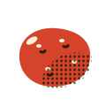

Farm note

Forty rows of seed potatoes, and why we wait for the oaks
Potatoes go in when the oak leaves are the size of a squirrel's ear. How we cut and cure 1,800 pounds of seed, and the old tractor that plants them.
Bramblecut FarmMay 6, 2026